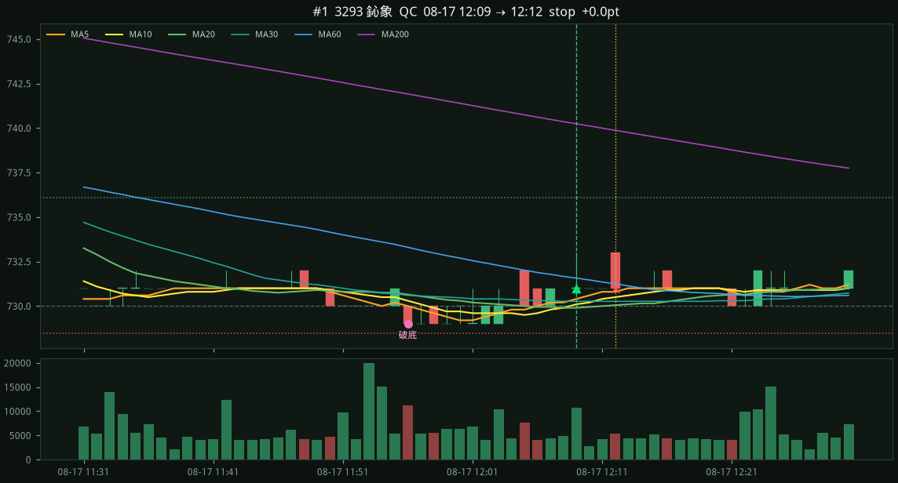
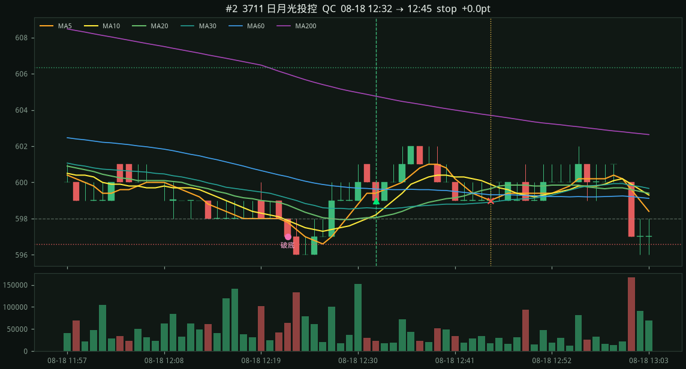
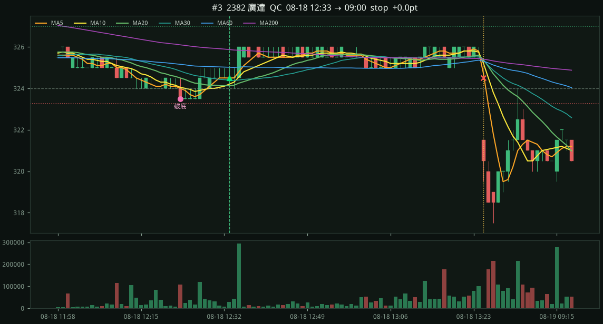
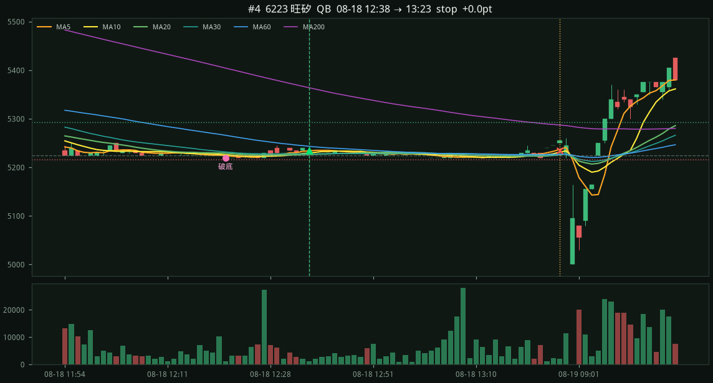
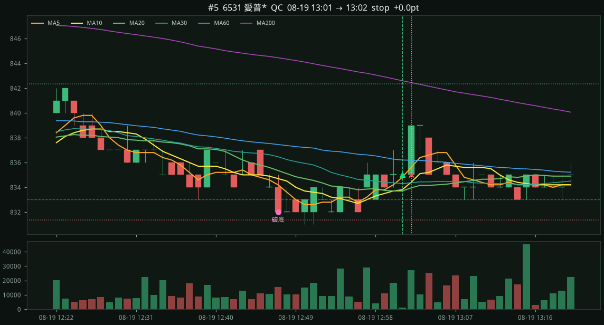
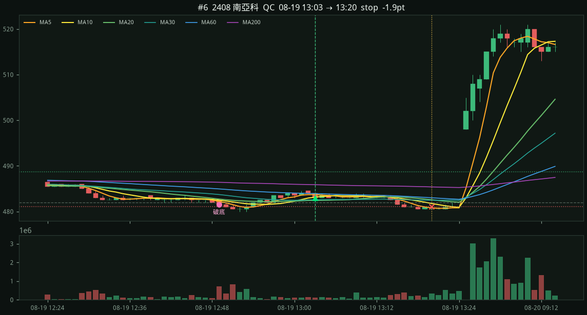
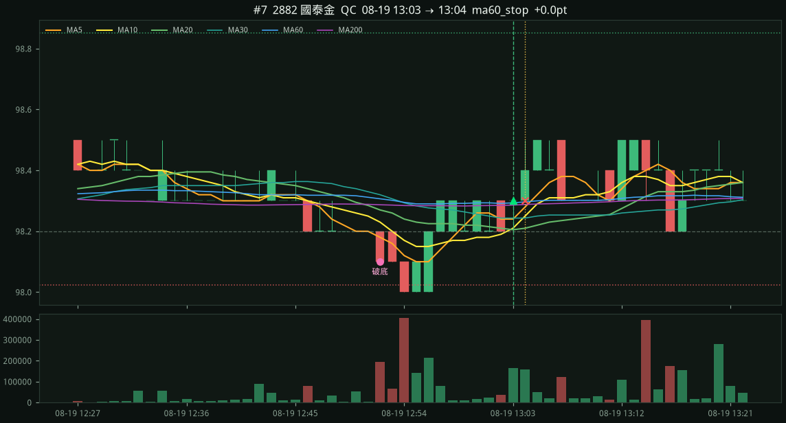

#1 · 3293 鈊象 · QC2026-08-17 12:09 → 08-17 12:12
+0.00
entry 731.00 stop 728.45 (−2.55) target 736.10 exit 731.00 stop 破底 729.00 / 2h低 730.00

7d · 基準日 20260821 · 第100名成交額約 17.3 億
規則同 NQ：破 2h 低、15 根收復 MA20/30、5/10/20 多頭、09–10 不進。點數 × 股價/20000。
entry 731.00 stop 728.45 (−2.55) target 736.10 exit 731.00 stop 破底 729.00 / 2h低 730.00

entry 599.00 stop 596.56 (−2.44) target 606.32 exit 599.00 stop 破底 597.00 / 2h低 598.00

entry 324.50 stop 323.26 (−1.24) target 326.98 exit 324.50 stop 破底 323.50 / 2h低 324.00

entry 5235.00 stop 5215.90 (−19.10) target 5292.30 exit 5235.00 stop 破底 5220.00 / 2h低 5225.00

entry 835.00 stop 831.34 (−3.66) target 842.32 exit 835.00 stop 破底 832.00 / 2h低 833.00

entry 483.00 stop 481.10 (−1.90) target 488.69 exit 481.10 stop 破底 481.50 / 2h低 482.00

entry 98.30 stop 98.02 (−0.28) target 98.85 exit 98.30 ma60_stop 破底 98.10 / 2h低 98.20
